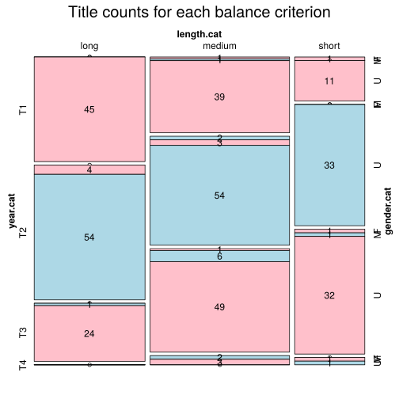

Click on a column heading to sort. Click on a text identifier to read the text (may not work in older browsers).
| Identifier | Encoding | Pages | Words | (Size) | Date (Slot) | Title | Author | Sex | Reprints |
|---|---|---|---|---|---|---|---|---|---|
| FRA00303 |
eltec-1 | 0 | 72134 | (medium) | 1881 (T3) | Les Bandits de l'Arizona | Aimard, Gustave (1818-1883) | M | low |
| FRA00603 |
eltec-1 | 0 | 125052 | (long) | 1889 (T3) | Double-blanc | Boisgobey, Fortuné du (1821-1891) | M | low |
| FRA00902 |
eltec-1 | 0 | 46932 | (short) | 1890 (T3) | Port-Tarascon | Daudet, Alphonse (1840-1897) | M | low |
| FRA00903 |
eltec-1 | 85708 | (medium) | 1881 (T3) | Numa Roumestan | Daudet, Alphonse (1840-1897) | M | low | |
| FRA01001 |
eltec-1 | 62356 | (medium) | 1910 (T4) | Comme tout le monde | Delarue-Mardrus, Lucie (1874-1945) | F | low | |
| FRA01103 |
eltec-1 | 0 | 40970 | (short) | 1890 (T3) | La Nounou | Dombre, Roger (Marguerite Sisson / Marguerite Ligeron) (1859-1914) | F | low |
| FRA01702 |
eltec-1 | 59638 | (medium) | 1857 (T1) | Le roman de la momie | Gautier, Théophile (1800-1872) | M | high | |
| FRA01901 |
eltec-1 | 127326 | (long) | 1866 (T2) | Le crime d'Orcival | Gaboriau, Émile (1832-1873) | M | low | |
| FRA01903 |
eltec-1 | 0 | 173622 | (long) | 1874 (T2) | L'Argent des autres | Gaboriau, Émile (1832-1873) | M | high |
| FRA02402 |
eltec-1 | 76673 | (medium) | 1900 (T4) | La Conspiration des Milliardaires | Le Rouge, Gustave (1867-1938) | M | low | |
| FRA02403 |
eltec-1 | 0 | 73470 | (medium) | 1909 (T4) | La Guerre des vampires | Le Rouge, Gustave (1867-1938) | M | high |
| FRA02502 |
eltec-1 | 57949 | (medium) | 1897 (T3) | Ramuntcho | Loti, Pierre (1850-1923) | M | high | |
| FRA02503 |
eltec-1 | 0 | 53825 | (medium) | 1879 (T2) | Aziyadé | Loti, Pierre (1850-1923) | M | high |
| FRA02703 |
eltec-1 | 0 | 75586 | (medium) | 1889 (T3) | Fort comme la mort | Maupassant, Guy de (1850-1893) | M | high |
| FRA02801 |
eltec-1 | 78137 | (medium) | 1888 (T3) | L'abbé Jules | Mirbeau, Octave (1848-1917) | M | high | |
| FRA02803 |
eltec-1 | 0 | 64881 | (medium) | 1899 (T3) | Le Jardin des supplices | Mirbeau, Octave (1848-1917) | M | high |
| FRA03102 |
eltec-1 | 173741 | (long) | 1866 (T2) | La résurrection de Rocambole | Ponson du Terrail, Pierre Alexis (1829-1871) | M | low | |
| FRA03103 |
eltec-1 | 0 | 64938 | (medium) | 1868 (T2) | La fée d'Auteuil | Ponson du Terrail, Pierre Alexis (1829-1871) | M | low |
| FRA03301 |
eltec-1 | 56517 | (medium) | 1866 (T2) | La Mexicaine | Rattazzi, Marie [Marie-Lætitia Bonaparte-Wyse] (1831-1902) | F | low | |
| FRA03703 |
eltec-1 | 89154 | (medium) | 1840 (T1) | Le Compagnon du Tour de France | Sand, George [Amantine Lucile Aurore Dupin] (1804-1876) | F | high | |
| FRA03801 |
eltec-1 | 16339 | (short) | 1843 (T1) | Hervé | Stern, Daniel [Marie d'Agoult] (1805-1876) | F | low | |
| FRA03901 |
eltec-1 | 52092 | (medium) | 1869 (T2) | La Maison roulante | Stolz, Madame de [Fanny de Bégon] (1820-1898) | F | low | |
| FRA03902 |
eltec-1 | 52128 | (medium) | 1884 (T3) | La Maison blanche | Stolz, Madame de [Fanny de Bégon] (1820-1898) | F | low | |
| FRA04003 |
eltec-1 | 0 | 144174 | (long) | 1866 (T2) | Voyages et aventures du Capitaine Hatteras | Verne, Jules (1828-1905) | M | high |
| FRA04101 |
eltec-1 | 0 | 81303 | (medium) | 1865 (T2) | Waterloo | Erckmann, Émile (1822-1899) | M | high |
| FRA04201 |
eltec-1 | 41108 | (short) | 1904 (T4) | L'aube | Rolland, Romain (1866-1944) | M | low | |
| FRA04203 |
eltec-1 | 0 | 69465 | (medium) | 1908 (T4) | La foire sur la place | Rolland, Romain (1866-1944) | M | low |
| FRA05601 |
eltec-1 | 67461 | (medium) | 1909 (T4) | Droit à la force | Lesueur, Daniel (1854-1921) | F | low | |
| FRA40001 |
eltec-1 | 34604 | (short) | 1841 (T1) | L'amour impossible | Barbey d'Aurevilly, Jules (-) | U | unspecified | |
| FRA40002 |
eltec-1 | 73079 | (medium) | 1852 (T1) | L'ensorcelée | Barbey d'Aurevilly, Jules (-) | U | unspecified | |
| FRA40003 |
eltec-1 | 55874 | (medium) | 1857 (T1) | Le roman de la momie | Gautier, Théophile (-) | U | unspecified | |
| FRA40006 |
eltec-1 | 37723 | (short) | 1882 (T3) | Une histoire sans nom | Aurevilly, Jules Barbey d' (-) | U | unspecified | |
| FRA40007 |
eltec-1 | 59772 | (medium) | 1850 (T1) | La femme au collier de velours | Dumas, Alexandre (-) | U | unspecified | |
| FRA40008 |
eltec-1 | 61684 | (medium) | 1849 (T1) | Les mariages du père Olifus | Dumas, Alexandre (-) | U | unspecified | |
| FRA40009 |
eltec-1 | 36717 | (short) | 1860 (T2) | Le chevalier Ténèbre | Féval, Paul H.C. (père) (-) | U | unspecified | |
| FRA40010 |
eltec-1 | 63872 | (medium) | 1852 (T1) | La baronne trépassée | Alexis Ponson du Terrail, Pierre (-) | U | unspecified | |
| FRA40011 |
eltec-1 | 91378 | (medium) | 1852 (T1) | La femme immortelle | Alexis Ponson du Terrail, Pierre (-) | U | unspecified | |
| FRA40012 |
eltec-1 | 61344 | (medium) | 1868 (T2) | La fée d'Auteuil | Alexis Ponson du Terrail, Pierre (-) | U | unspecified | |
| FRA40013 |
eltec-1 | 50175 | (medium) | 1866 (T2) | Les nuits du quartier Breda | Alexis Ponson du Terrail, Pierre (-) | U | unspecified | |
| FRA40014 |
eltec-1 | 117697 | (long) | 1877 (T2) | Hector Servadac | Verne, Jules (-) | U | unspecified | |
| FRA40015 |
eltec-1 | 119998 | (long) | 1897 (T3) | Le sphinx des glaces | Verne, Jules (-) | U | unspecified | |
| FRA40016 |
eltec-1 | 67736 | (medium) | 1882 (T3) | L'évangeliste | Daudet, Alphonse (-) | U | unspecified | |
| FRA40017 |
eltec-1 | 171531 | (long) | 1875 (T2) | Jack | , (-) | U | unspecified | |
| FRA40018 |
eltec-1 | 140061 | (long) | 1877 (T2) | Le Nabab | Daudet, Alphonse (-) | U | unspecified | |
| FRA40019 |
eltec-1 | 82839 | (medium) | 1881 (T3) | Numa Roumestan | Daudet, Alphonse (-) | U | unspecified | |
| FRA40020 |
eltec-1 | 86121 | (medium) | 1867 (T2) | Le petit chose | Daudet, Alphonse (-) | U | unspecified | |
| FRA40021 |
eltec-1 | 46244 | (short) | 1890 (T3) | Port-Tarascon | Daudet, Alphonse (-) | U | unspecified | |
| FRA40022 |
eltec-1 | 58448 | (medium) | 1884 (T3) | Sapho | Daudet, Alphonse (-) | U | unspecified | |
| FRA40023 |
eltec-1 | 28045 | (short) | 1872 (T2) | Les aventures prodigieuses de Tartarin de Tarascon | Daudet, Alphonse (-) | U | unspecified | |
| FRA40024 |
eltec-1 | 48965 | (short) | 1885 (T3) | Tartarin sur les Alpes | Daudet, Alphonse (-) | U | unspecified | |
| FRA40025 |
eltec-1 | 66868 | (medium) | 1864 (T2) | L'ami Fritz | Erckmann, Émile (-) | U | unspecified | |
| FRA40026 |
eltec-1 | 67245 | (medium) | 1867 (T2) | Le blocus | Erckmann, Émile (-) | U | unspecified | |
| FRA40027 |
eltec-1 | 22776 | (short) | 1873 (T2) | Une campagne en Kabylie | Erckmann, Émile (-) | U | unspecified | |
| FRA40028 |
eltec-1 | 41440 | (short) | 1876 (T2) | Un chef de chantier à l'isthme de Suez | Erckmann, Émile (-) | U | unspecified | |
| FRA40029 |
eltec-1 | 64876 | (medium) | 1873 (T2) | Les deux frères (Les Rantzau) | Erckmann, Émile (-) | U | unspecified | |
| FRA40030 |
eltec-1 | 66181 | (medium) | 1864 (T2) | Histoire d'un circonscrit de 1813 | Erckmann, Émile (-) | U | unspecified | |
| FRA40031 |
eltec-1 | 79261 | (medium) | 1865 (T2) | Histoire d'un homme du peuple | Erckmann, Émile (-) | U | unspecified | |
| FRA40032 |
eltec-1 | 79934 | (medium) | 1869 (T2) | Histoire d'un paysan, 1789-1815, I | Erckmann, Émile (-) | U | unspecified | |
| FRA40033 |
eltec-1 | 78096 | (medium) | 1869 (T2) | Histoire d'un paysan, 1789-1815, II | Erckmann, Émile (-) | U | unspecified | |
| FRA40034 |
eltec-1 | 89470 | (medium) | 1869 (T2) | Histoire d'un paysan, 1789-1815, III | Erckmann, Émile (1822-1899) | U | unspecified | |
| FRA40035 |
eltec-1 | 78464 | (medium) | 1869 (T2) | Histoire d'un paysan, 1789-1815, IV | Erckmann, Émile (1822-1899) | U | unspecified | |
| FRA40036 |
eltec-1 | 71190 | (medium) | 1862 (T2) | L'invasion ou le fou Yégof | Erckmann, Émile (-) | U | unspecified | |
| FRA40037 |
eltec-1 | 60488 | (medium) | 1863 (T2) | Madame Thérèse, ou les volontaires de 92 | Erckmann, Émile (-) | U | unspecified | |
| FRA40038 |
eltec-1 | 79964 | (medium) | 1865 (T2) | Waterloo | Erckmann, Émile (-) | U | unspecified | |
| FRA40039 |
eltec-1 | 85799 | (medium) | 1881 (T3) | Bouvard et Pécuchet | Flaubert, Gustave (-) | U | unspecified | |
| FRA40040 |
eltec-1 | 116535 | (long) | 1857 (T1) | Madame Bovary | Flaubert, Gustave (-) | U | unspecified | |
| FRA40041 |
eltec-1 | 150492 | (long) | 1869 (T2) | L'Éducation sentimentale | Flaubert, Gustave (-) | U | unspecified | |
| FRA40042 |
eltec-1 | 103529 | (long) | 1862 (T2) | Sallambô | Flaubert, Gustave (-) | U | unspecified | |
| FRA40043 |
eltec-1 | 51968 | (medium) | 1879 (T2) | Aziyadé | Loti, Pierre (-) | U | unspecified | |
| FRA40044 |
eltec-1 | 43154 | (short) | 1898 (T3) | Figures et choses qui passaient | Loti, Pierre (-) | U | unspecified | |
| FRA40045 |
eltec-1 | 47590 | (short) | 1887 (T3) | Madame Chrysanthème | Loti, Pierre (-) | U | unspecified | |
| FRA40046 |
eltec-1 | 47819 | (short) | 1882 (T3) | Le mariage de Loti | Loti, Pierre (-) | U | unspecified | |
| FRA40047 |
eltec-1 | 71698 | (medium) | 1883 (T3) | Mon frère Yves | Loti, Pierre (-) | U | unspecified | |
| FRA40049 |
eltec-1 | 55741 | (medium) | 1897 (T3) | Ramuntcho | Loti, Pierre (-) | U | unspecified | |
| FRA40050 |
eltec-1 | 51159 | (medium) | 1890 (T3) | Le roman d'un enfant | Loti, Pierre (-) | U | unspecified | |
| FRA40051 |
eltec-1 | 48394 | (short) | 1881 (T3) | Le roman d'un Spahi | Loti, Pierre (-) | U | unspecified | |
| FRA40052 |
eltec-1 | 110862 | (long) | 1885 (T3) | Bel-Ami | Maupassant, Guy de (-) | U | unspecified | |
| FRA40053 |
eltec-1 | 73577 | (medium) | 1889 (T3) | Fort comme la mort | Maupassant, Guy de (-) | U | unspecified | |
| FRA40054 |
eltec-1 | 82578 | (medium) | 1887 (T3) | Mont-Oriol | Maupassant, Guy de (-) | U | unspecified | |
| FRA40055 |
eltec-1 | 49297 | (short) | 1888 (T3) | Pierre et Jean | Maupassant, Guy de (-) | U | unspecified | |
| FRA40056 |
eltec-1 | 75745 | (medium) | 1883 (T3) | Une Vie | Maupassant, Guy de (-) | U | unspecified | |
| FRA40057 |
eltec-1 | 129913 | (long) | 1890 (T3) | La bête humaine | Zola, Émile (-) | U | unspecified | |
| FRA40058 |
eltec-1 | 169656 | (long) | 1885 (T3) | Germinal | Zola, Émile (-) | U | unspecified | |
| FRA40059 |
eltec-1 | 147474 | (long) | 1885 (T3) | Nana | Zola, Émile (-) | U | unspecified | |
| FRA40060 |
eltec-1 | 136445 | (long) | 1886 (T3) | L'oeuvre | Zola, Émile (-) | U | unspecified | |
| FRA40061 |
eltec-1 | 113519 | (long) | 1873 (T2) | Le Ventre de Paris | Zola, Émile (-) | U | unspecified | |
| FRA40081 |
eltec-1 | 60746 | (medium) | 1884 (T3) | L'archipel en feu | Verne, Jules (-) | U | unspecified | |
| FRA40082 |
eltec-1 | 57710 | (medium) | 1869 (T2) | Autour de la lune | Verne, Jules (-) | U | unspecified | |
| FRA40083 |
eltec-1 | 67646 | (medium) | 1872 (T2) | Aventures de trois russes et de trois anglais dans l'Afrique australe | Verne, Jules (-) | U | unspecified | |
| FRA40084 |
eltec-1 | 50230 | (medium) | 1886 (T3) | Un billet de loterie (Le numéro 9672) | Verne, Jules (-) | U | unspecified | |
| FRA40086 |
eltec-1 | 142545 | (long) | 1866 (T2) | Voyages et aventures du Capitaine Hatteras | Verne, Jules (-) | U | unspecified | |
| FRA40087 |
eltec-1 | 120890 | (long) | 1878 (T2) | Un capitaine de quinze ans | Verne, Jules (-) | U | unspecified | |
| FRA40088 |
eltec-1 | 54828 | (medium) | 1875 (T2) | Le Chancellor | Verne, Jules (-) | U | unspecified | |
| FRA40091 |
eltec-1 | 52589 | (medium) | 1892 (T3) | Le château des Carpathes | Verne, Jules (-) | U | unspecified | |
| FRA40092 |
eltec-1 | 108030 | (long) | 1872 (T2) | La curée | Zola, Émile (-) | U | unspecified | |
| FRA40093 |
eltec-1 | 115916 | (long) | 1893 (T3) | Le docteur Pascal | Zola, Émile (-) | U | unspecified | |
| FRA40094 |
eltec-1 | 192466 | (long) | 1892 (T3) | La débâcle | Zola, Émile (-) | U | unspecified | |
| FRA40095 |
eltec-1 | 120741 | (long) | 1870 (T2) | La fortune des Rougon | Zola, Émile (-) | U | unspecified | |
| FRA40096 |
eltec-1 | 132579 | (long) | 1876 (T2) | Son excellence Eugène Rougon | Zola, Émile (-) | U | unspecified | |
| FRA40097 |
eltec-1 | 62672 | (medium) | 1883 (T3) | Le Capitaine Burle | Zola, Émile (-) | U | unspecified | |
| FRA40098 |
eltec-1 | 121042 | (long) | 1884 (T3) | La joie de vivre | Zola, Émile (-) | U | unspecified | |
| FRA40099 |
eltec-1 | 106516 | (long) | 1878 (T2) | Une page d'amour | Zola, Émile (-) | U | unspecified | |
| FRA40100 |
eltec-1 | 164260 | (long) | 1877 (T2) | L'assommoir | Zola, Émile (-) | U | unspecified | |
| FRA40101 |
eltec-1 | 141012 | (long) | 1882 (T3) | Pot-bouille | Zola, Émile (-) | U | unspecified | |
| FRA40102 |
eltec-1 | 147821 | (long) | 1891 (T3) | L'argent | Zola, Émile (-) | U | unspecified | |
| FRA40103 |
eltec-1 | 68128 | (medium) | 1888 (T3) | Le rêve | Zola, Émile (-) | U | unspecified | |
| FRA40104 |
eltec-1 | 118153 | (long) | 1875 (T2) | La faute de l'abbé Mouret | Zola, Émile (-) | U | unspecified | |
| FRA40105 |
eltec-1 | 170420 | (long) | 1887 (T3) | La terre | Zola, Émile (-) | U | unspecified | |
| FRA40106 |
eltec-1 | 227858 | (long) | 1886 (T3) | La Bande rouge | Boisgobey, Fortuné Du (-) | U | unspecified | |
| FRA40108 |
eltec-1 | 97540 | (medium) | 1889 (T3) | La Main froide | Du Boisgobey, Fortuné (-) | U | unspecified | |
| FRA40109 |
eltec-1 | 70004 | (medium) | 1861 (T2) | Les Cotillons célèbres, 1 | Gaboriau, Émile (-) | U | unspecified | |
| FRA40110 |
eltec-1 | 79075 | (medium) | 1861 (T2) | Les cotillons célèbres, 2 | Gaboriau, Émile (-) | U | unspecified | |
| FRA40127 |
eltec-1 | 120431 | (long) | 1842 (T1) | Les mystères de Paris, tome 1 | Sue, Eugène (-) | U | unspecified | |
| FRA40128 |
eltec-1 | 122378 | (long) | 1842 (T1) | Les mystères de Paris, tome 2 | Sue, Eugène (-) | U | unspecified | |
| FRA40129 |
eltec-1 | 110095 | (long) | 1843 (T1) | Les mystères de Paris, tome 4 | Sue, Eugène (-) | U | unspecified | |
| FRA40130 |
eltec-1 | 101201 | (long) | 1843 (T1) | Les mystères de Paris, tome 5 | Sue, Eugène (-) | U | unspecified | |
| FRA40131 |
eltec-1 | 92617 | (medium) | 1849 (T1) | Les mystères du peuple. Histoire d'une famille de prolétaires à travers les âges, tome 2 | Sue, Eugène (-) | U | unspecified | |
| FRA40132 |
eltec-1 | 128709 | (long) | 1850 (T1) | Les mystères du peuple. Histoire d'une famille de prolétaires à travers les âges, tome 3 | Sue, Eugène (-) | U | unspecified | |
| FRA40133 |
eltec-1 | 144374 | (long) | 1850 (T1) | Les mystères du peuple. Histoire d'une famille de prolétaires à travers les âges, tome 4 | Sue, Eugène (-) | U | unspecified | |
| FRA40134 |
eltec-1 | 66453 | (medium) | 1851 (T1) | Les mystères du peuple. Histoire d'une famille de prolétaires à travers les âges, tome 6 | Sue, Eugène (-) | U | unspecified | |
| FRA40135 |
eltec-1 | 173113 | (long) | 1851 (T1) | Les mystères du peuple. Histoire d'une famille de prolétaires à travers les âges, tome 7 | Sue, Eugène (-) | U | unspecified | |
| FRA40136 |
eltec-1 | 112138 | (long) | 1853 (T1) | Les mystères du peuple. Histoire d'une famille de prolétaires à travers les âges, tome 8 | Sue, Eugène (-) | U | unspecified | |
| FRA40137 |
eltec-1 | 109001 | (long) | 1853 (T1) | Les mystères du peuple. Histoire d'une famille de prolétaires à travers les âges, tome 9 | Sue, Eugène (-) | U | unspecified | |
| FRA40138 |
eltec-1 | 111857 | (long) | 1854 (T1) | Les mystères du peuple. Histoire d'une famille de prolétaires à travers les âges, tome 10 | Sue, Eugène (-) | U | unspecified | |
| FRA40139 |
eltec-1 | 123004 | (long) | 1854 (T1) | Les mystères du peuple. Histoire d'une famille de prolétaires à travers les âges, tome 11 | Sue, Eugène (-) | U | unspecified | |
| FRA40140 |
eltec-1 | 107922 | (long) | 1855 (T1) | Les mystères du peuple. Histoire d'une famille de prolétaires à travers les âges, tome 12 | Sue, Eugène (-) | U | unspecified | |
| FRA40141 |
eltec-1 | 107696 | (long) | 1856 (T1) | Les mystères du peuple. Histoire d'une famille de prolétaires à travers les âges, tome 13 | Sue, Eugène (-) | U | unspecified | |
| FRA40142 |
eltec-1 | 119567 | (long) | 1857 (T1) | Les mystères du peuple. Histoire d'une famille de prolétaires à travers les âges, tome 15 | Sue, Eugène (-) | U | unspecified | |
| FRA40143 |
eltec-1 | 165100 | (long) | 1857 (T1) | Les mystères du peuple. Histoire d'une famille de prolétaires à travers les âges, tome 16 | Sue, Eugène (-) | U | unspecified | |
| FRA40144 |
eltec-1 | 63104 | (medium) | 1899 (T3) | Le Jardin des supplices | Mirbeau, Octave (-) | U | unspecified | |
| FRA40146 |
eltec-1 | 76757 | (medium) | 1887 (T3) | Le Calvaire | Mirbeau, Octave (-) | U | unspecified | |
| FRA40147 |
eltec-1 | 92784 | (medium) | 1890 (T3) | Sébastien Roch | Mirbeau, Octave (-) | U | unspecified | |
| FRA40148 |
eltec-1 | 75730 | (medium) | 1888 (T3) | L'abbé Jules | Mirbeau, Octave (-) | U | unspecified | |
| FRA40149 |
eltec-1 | 121080 | (long) | 1888 (T3) | Deux ans de vacances | Verne, Jules (-) | U | unspecified | |
| FRA40167 |
eltec-1 | 104941 | (long) | 1889 (T3) | Verne, Jules (-) | U | unspecified | ||
| FRA40168 |
eltec-1 | 122924 | (long) | 1877 (T2) | Hector Servadac | Verne, Jules (-) | U | unspecified | |
| FRA40169 |
eltec-1 | 201275 | (long) | 1875 (T2) | L'Île mystérieuse | Verne, Jules (-) | U | unspecified | |
| FRA40171 |
eltec-1 | 111889 | (long) | 1883 (T3) | Kéraban-Le-Têtu | Verne, Jules (-) | U | unspecified | |
| FRA40172 |
eltec-1 | 164270 | (long) | 1885 (T3) | Mathias Sandorf | Verne, Jules (-) | U | unspecified | |
| FRA40174 |
eltec-1 | 135914 | (long) | 1873 (T2) | Le Pays des fourrures | Verne, Jules (-) | U | unspecified | |
| FRA40175 |
eltec-1 | 53008 | (medium) | 1898 (T3) | Le Secret de Wilhelm Storitz | Verne, Jules (-) | U | unspecified | |
| FRA40176 |
eltec-1 | 132703 | (long) | 1899 (T3) | Le Testament d'un excentrique | Verne, Jules (-) | U | unspecified | |
| FRA40177 |
eltec-1 | 59668 | (medium) | 1879 (T2) | Les Tribulations d'un chinois en Chine | Verne, Jules (-) | U | unspecified | |
| FRA40178 |
eltec-1 | 143608 | (long) | 1871 (T2) | Vingt Mille lieues sous les mers | Verne, Jules (-) | U | unspecified | |
| FRA40300 |
eltec-1 | 72186 | (medium) | 1869 (T2) | Aimard, Gustave (-) | U | unspecified | ||
| FRA40301 |
eltec-1 | 66933 | (medium) | 1881 (T3) | Les Bandits d'Arizona | Aimard, Gustave (-) | U | unspecified | |
| FRA40302 |
eltec-1 | 84338 | (medium) | 1858 (T1) | Aimard, Gustave (-) | U | unspecified | ||
| FRA40303 |
eltec-1 | 101314 | (long) | 1877 (T2) | Aimard, Gustave (-) | U | unspecified | ||
| FRA40304 |
eltec-1 | 98114 | (medium) | 1877 (T2) | Aimard, Gustave (-) | U | unspecified | ||
| FRA40305 |
eltec-1 | 56917 | (medium) | 1868 (T2) | Aimard, Gustave (-) | U | unspecified | ||
| FRA40306 |
eltec-1 | 55472 | (medium) | 1865 (T2) | Les Bohèmes de la mer | Aimard, Gustave (-) | U | unspecified | |
| FRA40307 |
eltec-1 | 82543 | (medium) | 1861 (T2) | Aimard, Gustave (-) | U | unspecified | ||
| FRA40308 |
eltec-1 | 157443 | (long) | 1877 (T2) | Le Chasseur de rats | Aimard, Gustave (-) | U | unspecified | |
| FRA40309 |
eltec-1 | 189496 | (long) | 1858 (T1) | Le grand Chef des Aucas | Aimard, Gustave (-) | U | unspecified | |
| FRA40311 |
eltec-1 | 129087 | (long) | 1874 (T2) | Belle rivière | Aimard, Gustave (-) | U | unspecified | |
| FRA40312 |
eltec-1 | 89310 | (medium) | 1858 (T1) | Aimard, Gustave (-) | U | unspecified | ||
| FRA40313 |
eltec-1 | 108859 | (long) | 1859 (T1) | Aimard, Gustave (-) | U | unspecified | ||
| FRA40314 |
eltec-1 | 105642 | (long) | 1858 (T1) | Aimard, Gustave (-) | U | unspecified | ||
| FRA40315 |
eltec-1 | 35542 | (short) | 1879 (T2) | , (-) | U | unspecified | ||
| FRA40316 |
eltec-1 | 35743 | (short) | 1879 (T2) | , (-) | U | unspecified | ||
| FRA40317 |
eltec-1 | 35646 | (short) | 1879 (T2) | , (-) | U | unspecified | ||
| FRA40318 |
eltec-1 | 31128 | (short) | 1878 (T2) | , (-) | U | unspecified | ||
| FRA40319 |
eltec-1 | 35790 | (short) | 1866 (T2) | Les Pieds fourchus | Aimard, Gustave; Auriac, Jean-Baptiste (-) | U | unspecified | |
| FRA40320 |
eltec-1 | 37562 | (short) | 1879 (T2) | , (-) | U | unspecified | ||
| FRA40323 |
eltec-1 | 30658 | (short) | 1899 (T3) | Allais, Alphonse (-) | U | unspecified | ||
| FRA40343 |
eltec-1 | 46649 | (short) | 1890 (T3) | Dombre, Roger (-) | U | unspecified | ||
| FRA40344 |
eltec-1 | 23255 | (short) | 1889 (T3) | Dombre, Roger (-) | U | unspecified | ||
| FRA40345 |
eltec-1 | 38180 | (short) | 1890 (T3) | Dombre, Roger (-) | U | unspecified | ||
| FRA40346 |
eltec-1 | 48108 | (short) | 1880 (T3) | Fleuriot, Zénaïde (-) | U | unspecified | ||
| FRA40347 |
eltec-1 | 32352 | (short) | 1877 (T2) | Fleuriot, Zénaïde (-) | U | unspecified | ||
| FRA40348 |
eltec-1 | 35390 | (short) | 1874 (T2) | Fleuriot, Zénaïde (-) | U | unspecified | ||
| FRA40349 |
eltec-1 | 41970 | (short) | 1882 (T3) | Fleuriot, Zénaïde (-) | U | unspecified | ||
| FRA40350 |
eltec-1 | 59461 | (medium) | 1881 (T3) | Fleuriot, Zénaïde (-) | U | unspecified | ||
| FRA40364 |
eltec-1 | 40572 | (short) | 1858 (T1) | Gautier, Théophile (-) | U | unspecified | ||
| FRA40365 |
eltec-1 | 185668 | (long) | 1863 (T2) | Le Capitaine Fracasse | Gauthier, Théophile (-) | U | unspecified | |
| FRA40367 |
eltec-1 | 42016 | (short) | 1882 (T3) | Gouraud, Julie (-) | U | unspecified | ||
| FRA40368 |
eltec-1 | 36480 | (short) | 1880 (T3) | Gouraud, Julie (-) | U | unspecified | ||
| FRA40369 |
eltec-1 | 42714 | (short) | 1888 (T3) | Gouraud, Julie (-) | U | unspecified | ||
| FRA40370 |
eltec-1 | 42257 | (short) | 1876 (T2) | Gouraud, Julie (-) | U | unspecified | ||
| FRA40371 |
eltec-1 | 43332 | (short) | 1874 (T2) | Gouraud, Julie (-) | U | unspecified | ||
| FRA40372 |
eltec-1 | 43256 | (short) | 1872 (T2) | Gouraud, Julie (-) | U | unspecified | ||
| FRA40373 |
eltec-1 | 49469 | (short) | 1884 (T3) | Gouraud, Julie (-) | U | unspecified | ||
| FRA40374 |
eltec-1 | 36654 | (short) | 1868 (T2) | Gouraud, Julie (-) | U | unspecified | ||
| FRA40375 |
eltec-1 | 42899 | (short) | 1873 (T2) | Gouraud, Julie (-) | U | unspecified | ||
| FRA40376 |
eltec-1 | 39366 | (short) | 1869 (T2) | Gouraud, Julie (-) | U | unspecified | ||
| FRA40377 |
eltec-1 | 54753 | (medium) | 1878 (T2) | Gouraud, Julie (-) | U | unspecified | ||
| FRA40378 |
eltec-1 | 29029 | (short) | 1884 (T3) | Gouraud, Julie (-) | U | unspecified | ||
| FRA40379 |
eltec-1 | 40459 | (short) | 1867 (T2) | Gouraud, Julie (-) | U | unspecified | ||
| FRA40380 |
eltec-1 | 39552 | (short) | 1866 (T2) | Gouraud, Julie (-) | U | unspecified | ||
| FRA40382 |
eltec-1 | 63762 | (medium) | 1879 (T2) | Karl Huysmans, Joris (-) | U | unspecified | ||
| FRA40402 |
eltec-1 | 54868 | (medium) | 1886 (T3) | Loti, Pierre (-) | U | unspecified | ||
| FRA40403 |
eltec-1 | 69604 | (medium) | 1883 (T3) | Loti, Pierre (-) | U | unspecified | ||
| FRA40404 |
eltec-1 | 49855 | (short) | 1890 (T3) | Loti, Pierre (-) | U | unspecified | ||
| FRA40405 |
eltec-1 | 36521 | (short) | 1893 (T3) | Loti, Pierre (-) | U | unspecified | ||
| FRA40407 |
eltec-1 | 104705 | (long) | 1878 (T2) | Malot, Hector (-) | U | unspecified | ||
| FRA40408 |
eltec-1 | 99766 | (medium) | 1886 (T3) | Malot, Hector (-) | U | unspecified | ||
| FRA40409 |
eltec-1 | 65835 | (medium) | 1869 (T2) | Malot, Hector (-) | U | unspecified | ||
| FRA40410 |
eltec-1 | 114534 | (long) | 1878 (T2) | Malot, Hector (-) | U | unspecified | ||
| FRA40411 |
eltec-1 | 87880 | (medium) | 1887 (T3) | Malot, Hector (-) | U | unspecified | ||
| FRA40412 |
eltec-1 | 67916 | (medium) | 1874 (T2) | Malot, Hector (-) | U | unspecified | ||
| FRA40413 |
eltec-1 | 78086 | (medium) | 1881 (T3) | Malot, Hector (-) | U | unspecified | ||
| FRA40414 |
eltec-1 | 97825 | (medium) | 1893 (T3) | Malot, Hector (-) | U | unspecified | ||
| FRA40415 |
eltec-1 | 96683 | (medium) | 1888 (T3) | Malot, Hector (-) | U | unspecified | ||
| FRA40416 |
eltec-1 | 45366 | (short) | 1873 (T2) | Malot, Hector (-) | U | unspecified | ||
| FRA40417 |
eltec-1 | 84322 | (medium) | 1874 (T2) | Malot, Hector (-) | U | unspecified | ||
| FRA40418 |
eltec-1 | 84089 | (medium) | 1891 (T3) | Malot, Hector (-) | U | unspecified | ||
| FRA40419 |
eltec-1 | 91448 | (medium) | 1886 (T3) | Malot, Hector (-) | U | unspecified | ||
| FRA40420 |
eltec-1 | 43347 | (short) | 1870 (T2) | Malot, Hector (-) | U | unspecified | ||
| FRA40421 |
eltec-1 | 70274 | (medium) | 1898 (T3) | Mary, Jules (-) | U | unspecified | ||
| FRA40422 |
eltec-1 | 75331 | (medium) | 1898 (T3) | Mary, Jules (-) | U | unspecified | ||
| FRA40423 |
eltec-1 | 50141 | (medium) | 1886 (T3) | Mary, Jules (-) | U | unspecified | ||
| FRA40424 |
eltec-1 | 233213 | (long) | 1889 (T3) | , (-) | U | unspecified | ||
| FRA40426 |
eltec-1 | 56786 | (medium) | 1883 (T3) | Mirbeau, Octave (-) | U | unspecified | ||
| FRA40440 |
eltec-1 | 51134 | (medium) | 1845 (T1) | Sand, George (-) | U | unspecified | ||
| FRA40442 |
eltec-1 | 101612 | (long) | 1843 (T1) | Sand, George (-) | U | unspecified | ||
| FRA40443 |
eltec-1 | 100908 | (long) | 1843 (T1) | Sand, George (-) | U | unspecified | ||
| FRA40444 |
eltec-1 | 146154 | (long) | 1845 (T1) | Sand, George (-) | U | unspecified | ||
| FRA40445 |
eltec-1 | 94058 | (medium) | 1872 (T2) | Sand, George (-) | U | unspecified | ||
| FRA40446 |
eltec-1 | 110453 | (long) | 1845 (T1) | Sand, George (-) | U | unspecified | ||
| FRA40447 |
eltec-1 | 22729 | (short) | 1875 (T2) | Sand, George (-) | U | unspecified | ||
| FRA40448 |
eltec-1 | 38748 | (short) | 1846 (T1) | Sand, George (-) | U | unspecified | ||
| FRA40449 |
eltec-1 | 123152 | (long) | 1853 (T1) | Sand, George (-) | U | unspecified | ||
| FRA40450 |
eltec-1 | 81543 | (medium) | 1846 (T1) | Sand, George (-) | U | unspecified | ||
| FRA40452 |
eltec-1 | 104138 | (long) | 1844 (T1) | Sand, George (-) | U | unspecified | ||
| FRA40454 |
eltec-1 | 122840 | (long) | 1841 (T1) | Sand, George (-) | U | unspecified | ||
| FRA40455 |
eltec-1 | 38791 | (short) | 1871 (T2) | Sand, George (-) | U | unspecified | ||
| FRA40456 |
eltec-1 | 62219 | (medium) | 1859 (T1) | Sand, George (-) | U | unspecified | ||
| FRA40457 |
eltec-1 | 29860 | (short) | 1857 (T1) | Sand, George (-) | U | unspecified | ||
| FRA40458 |
eltec-1 | 80767 | (medium) | 1866 (T2) | Sand, George (-) | U | unspecified | ||
| FRA40459 |
eltec-1 | 122059 | (long) | 1842 (T1) | Sand, George (-) | U | unspecified | ||
| FRA40460 |
eltec-1 | 107682 | (long) | 1842 (T1) | Sand, George (-) | U | unspecified | ||
| FRA40461 |
eltec-1 | 104120 | (long) | 1842 (T1) | Sand, George (-) | U | unspecified | ||
| FRA40462 |
eltec-1 | 50575 | (medium) | 1851 (T1) | Sand, George (-) | U | unspecified | ||
| FRA40471 |
eltec-1 | 48463 | (short) | 1848 (T1) | Sand, George (-) | U | unspecified | ||
| FRA40472 |
eltec-1 | 59454 | (medium) | 1849 (T1) | Sand, George (-) | U | unspecified | ||
| FRA40474 |
eltec-1 | 83095 | (medium) | 1840 (T1) | Sand, George (-) | U | unspecified | ||
| FRA40475 |
eltec-1 | 45376 | (short) | 1888 (T3) | , (-) | U | unspecified | ||
| FRA40476 |
eltec-1 | 48410 | (short) | 1869 (T2) | La Maison roulante | Stolz, Madame de [Fanny de Bégon] (1820-1898) | U | unspecified | |
| FRA40477 |
eltec-1 | 38731 | (short) | 1881 (T3) | , (-) | U | unspecified | ||
| FRA40478 |
eltec-1 | 43877 | (short) | 1874 (T2) | , (-) | U | unspecified | ||
| FRA40479 |
eltec-1 | 45825 | (short) | 1872 (T2) | , (-) | U | unspecified | ||
| FRA40480 |
eltec-1 | 48728 | (short) | 1884 (T3) | , (-) | U | unspecified | ||
| FRA40481 |
eltec-1 | 49413 | (short) | 1881 (T3) | , (-) | U | unspecified | ||
| FRA40482 |
eltec-1 | 45634 | (short) | 1878 (T2) | , (-) | U | unspecified | ||
| FRA40483 |
eltec-1 | 51075 | (medium) | 1892 (T3) | , (-) | U | unspecified | ||
| FRA40484 |
eltec-1 | 51701 | (medium) | 1874 (T2) | , (-) | U | unspecified | ||
| FRA40485 |
eltec-1 | 45557 | (short) | 1872 (T2) | , (-) | U | unspecified | ||
| FRA40561 |
eltec-1 | 18687 | (short) | 1842 (T1) | La fausse maîtresse | Balzac, Honoré de (-) | U | unspecified | |
| FRA40562 |
eltec-1 | 40691 | (short) | 1842 (T1) | Albert Savarus | Balzac, Honoré de (-) | U | unspecified | |
| FRA40563 |
eltec-1 | 80053 | (medium) | 1841 (T1) | Mémoires de deux jeunes mariées | Balzac, Honoré de (-) | U | unspecified | |
| FRA40564 |
eltec-1 | 91554 | (medium) | 1844 (T1) | Modeste Mignon | Balzac, Honoré de (-) | U | unspecified | |
| FRA40565 |
eltec-1 | 57737 | (medium) | 1842 (T1) | Un début dans la vie | Balzac, Honoré de (-) | U | unspecified | |
| FRA40566 |
eltec-1 | 82457 | (medium) | 1841 (T1) | Ursule Mirouët | Balzac, Honoré de (-) | U | unspecified | |
| FRA40567 |
eltec-1 | 51321 | (medium) | 1840 (T1) | Pierrette | Balzac, Honoré de (-) | U | unspecified | |
| FRA40568 |
eltec-1 | 20872 | (short) | 1845 (T1) | Les comédiens sans le savoir | Balzac, Honoré de (-) | U | unspecified | |
| FRA40569 |
eltec-1 | 151572 | (long) | 1846 (T1) | La cousine Bette | Balzac, Honoré de (-) | U | unspecified | |
| FRA40570 |
eltec-1 | 107886 | (long) | 1847 (T1) | Le cousin Pons | Balzac, Honoré de (-) | U | unspecified | |
| FRA40571 |
eltec-1 | 72648 | (medium) | 1841 (T1) | Une ténébreuse affaire | Balzac, Honoré de (-) | U | unspecified | |
| FRA40572 |
eltec-1 | 89397 | (medium) | 1841 (T1) | Le curé de village | Balzac, Honoré de (-) | U | unspecified | |
| FRA40605 |
eltec-1 | 128790 | (long) | 1868 (T2) | Le Cavalier Fortune | Féval, Paul H.C. (père) (-) | U | unspecified | |
| FRA40606 |
eltec-1 | 36145 | (short) | 1861 (T2) | Féval, Paul (père) (-) | U | unspecified | ||
| FRA40607 |
eltec-1 | 95246 | (medium) | 1857 (T1) | Féval, Paul (père) (-) | U | unspecified | ||
| FRA40608 |
eltec-1 | 76316 | (medium) | 1843 (T1) | Féval, Paul (père) (-) | U | unspecified | ||
| FRA40609 |
eltec-1 | 75779 | (medium) | 1850 (T1) | Féval, Paul (père) (-) | U | unspecified | ||
| FRA40610 |
eltec-1 | 182137 | (long) | 1846 (T1) | Féval, Paul (père) (-) | U | unspecified | ||
| FRA40611 |
eltec-1 | 161705 | (long) | 1865 (T2) | Féval, Paul (père) (-) | U | unspecified | ||
| FRA40612 |
eltec-1 | 76375 | (medium) | 1869 (T2) | Féval, Paul (père) (-) | U | unspecified | ||
| FRA40613 |
eltec-1 | 45906 | (short) | 1881 (T3) | Une Histoire de revenants | Féval, Paul Henri Corentin (père) (-) | U | unspecified | |
| FRA40614 |
eltec-1 | 45448 | (short) | 1881 (T3) | L'Homme sans bras | Féval, Paul (père) (-) | U | unspecified | |
| FRA40615 |
eltec-1 | 74390 | (medium) | 1843 (T1) | Féval, Paul (père) (-) | U | unspecified | ||
| FRA40616 |
eltec-1 | 61584 | (medium) | 1856 (T1) | La Louve, tome 2 | Féval, Paul (père) (-) | U | unspecified | |
| FRA40617 |
eltec-1 | 325297 | (long) | 1856 (T1) | Féval, Paul (père) (-) | U | unspecified | ||
| FRA40618 |
eltec-1 | 141663 | (long) | 1859 (T1) | Féval, Paul (père) (-) | U | unspecified | ||
| FRA40620 |
eltec-1 | 116777 | (long) | 1843 (T1) | Féval, Paul (père) (-) | U | unspecified | ||
| FRA40621 |
eltec-1 | 87662 | (medium) | 1846 (T1) | La Quittance de Minuit, tome 1 | Féval, Paul (père) (-) | U | unspecified | |
| FRA40622 |
eltec-1 | 82999 | (medium) | 1846 (T1) | La Quittance de Minuit, tome 2 | Féval, Paul (père) (-) | U | unspecified | |
| FRA40623 |
eltec-1 | 91067 | (medium) | 1852 (T1) | La Reine des Épées (Forêt Noire) | Féval, Paul (père) (-) | U | unspecified | |
| FRA40624 |
eltec-1 | 129439 | (long) | 1859 (T1) | Féval, Paul (père) (-) | U | unspecified | ||
| FRA40625 |
eltec-1 | 41836 | (short) | 1875 (T2) | La Ville-vampire | Féval, Paul (père) (-) | U | unspecified | |
| FRA40627 |
eltec-1 | 127952 | (long) | 1843 (T1) | Féval, Paul (père) (-) | U | unspecified | ||
| FRA40628 |
eltec-1 | 159880 | (long) | 1843 (T1) | Féval, Paul (père) (-) | U | unspecified | ||
| FRA40629 |
eltec-1 | 117081 | (long) | 1862 (T2) | Jean Diable, 2 | Féval, Paul (père) (-) | U | unspecified | |
| FRA40630 |
eltec-1 | 196393 | (long) | 1863 (T2) | Féval, Paul (père) (-) | U | unspecified | ||
| FRA40631 |
eltec-1 | 90430 | (medium) | 1869 (T2) | Féval, Paul (père) (-) | U | unspecified | ||
| FRA40632 |
eltec-1 | 127084 | (long) | 1868 (T2) | Féval, Paul (père) (-) | U | unspecified | ||
| FRA40633 |
eltec-1 | 213986 | (long) | 1857 (T1) | Le Bossu | Féval, Paul (père) (-) | U | unspecified | |
| FRA40634 |
eltec-1 | 263210 | (long) | 1862 (T2) | Jean Diable | Féval, Paul H.C. (père) (-) | U | unspecified | |
| FRA40635 |
eltec-1 | 164508 | (long) | 1872 (T2) | Les Compagnons du trésor | Féval, Paul Henry Corentin (père) (-) | U | unspecified | |
| FRA40636 |
eltec-1 | 50006 | (medium) | 1855 (T1) | Féval, Paul (père) (-) | U | unspecified | ||
| FRA40637 |
eltec-1 | 142939 | (long) | 1867 (T2) | Féval, Paul (père) (-) | U | unspecified | ||
| FRA40638 |
eltec-1 | 66134 | (medium) | 1879 (T2) | Huysmans, Joris-Karl (-) | U | unspecified | ||
| FRA40640 |
eltec-1 | 63985 | (medium) | 1884 (T3) | Huysmans, Joris-Karl (-) | U | unspecified | ||
| FRA40641 |
eltec-1 | 117563 | (long) | 1862 (T2) | Hugo, Victor (-) | U | unspecified | ||
| FRA40642 |
eltec-1 | 100805 | (long) | 1862 (T2) | Hugo, Victor (-) | U | unspecified | ||
| FRA40643 |
eltec-1 | 90218 | (medium) | 1862 (T2) | Hugo, Victor (-) | U | unspecified | ||
| FRA40644 |
eltec-1 | 125747 | (long) | 1862 (T2) | Hugo, Victor (-) | U | unspecified | ||
| FRA40645 |
eltec-1 | 107880 | (long) | 1862 (T2) | Hugo, Victor (-) | U | unspecified | ||
| FRA40646 |
eltec-1 | 48927 | (short) | 1897 (T3) | France, Anatole (-) | U | unspecified | ||
| FRA40647 |
eltec-1 | 50876 | (medium) | 1890 (T3) | France, Anatole (-) | U | unspecified | ||
| FRA40648 |
eltec-1 | 55600 | (medium) | 1881 (T3) | France, Anatole (-) | U | unspecified | ||
| FRA40656 |
eltec-1 | 107389 | (long) | 1885 (T3) | Ohnet, Georges (-) | U | unspecified | ||
| FRA40657 |
eltec-1 | 49653 | (short) | 1890 (T3) | Ohnet, Georges (-) | U | unspecified | ||
| FRA40658 |
eltec-1 | 46866 | (short) | 1892 (T3) | Les Batailles de la Vie, tome 1 | Ohnet, Georges (-) | U | unspecified | |
| FRA40717 |
eltec-1 | 67374 | (medium) | 1897 (T3) | Rodenbach, Georges (-) | U | unspecified | ||
| FRA40718 |
eltec-1 | 20283 | (short) | 1892 (T3) | Rodenbach, Georges (-) | U | unspecified | ||
| FRA40719 |
eltec-1 | 71623 | (medium) | 1890 (T3) | Darien, Georges (-) | U | unspecified | ||
| FRA40720 |
eltec-1 | 132421 | (long) | 1897 (T3) | Darien, Georges (-) | U | unspecified | ||
| FRA40721 |
eltec-1 | 83977 | (medium) | 1886 (T3) | L'Eve Future | Villiers de L'Isle-Adam, Auguste comte de (-) | U | unspecified | |
| FRA40722 |
eltec-1 | 37446 | (short) | 1862 (T2) | Isis | l'Isle Adam, Auguste Villiers de (-) | U | unspecified | |
| FRA40724 |
eltec-1 | 53147 | (medium) | 1849 (T1) | Les mille et un fantômes | Dumas, Alexandre (-) | U | unspecified | |
| FRA40726 |
eltec-1 | 82700 | (medium) | 1844 (T1) | Ellenore | Françoise Sophie Gay, Marie (-) | U | unspecified | |
| FRA40727 |
eltec-1 | 93788 | (medium) | 1844 (T1) | Ellénore | Françoise Sophie Gay, Marie (-) | U | unspecified | |
| FRA40728 |
eltec-1 | 23313 | (short) | 1907 (T4) | Le cahier rouge | Constant, Benjamin (-) | U | unspecified | |
| FRA40730 |
eltec-1 | 56083 | (medium) | 1862 (T2) | L'homme à l'oreille cassée | About, Edmond (-) | U | unspecified | |
| FRA40731 |
eltec-1 | 80297 | (medium) | 1857 (T1) | Le meneur de loups | Dumas, Alexandre (-) | U | unspecified | |
| FRA40732 |
eltec-1 | 87003 | (medium) | 1865 (T2) | La vampire | Féval, Paul H.C. (père) (-) | U | unspecified | |
| FRA40733 |
eltec-1 | 61777 | (medium) | 1848 (T1) | Partie carrée | Gautier, Théophile (-) | U | unspecified | |
| FRA40734 |
eltec-1 | 41745 | (short) | 1884 (T3) | Monsieur Vénus | Vallette-Eymery, Marguerite (aka Rachilde) (-) | U | unspecified | |
| FRA40735 |
eltec-1 | 45450 | (short) | 1845 (T1) | Paula Monti, Tome I | Sue, Eugène (-) | U | unspecified | |
| FRA40736 |
eltec-1 | 110030 | (long) | 1842 (T1) | Le morne au diable | Sue, Eugène (-) | U | unspecified | |
| FRA40737 |
eltec-1 | 135887 | (long) | 1865 (T2) | Un prêtre marié | Barbey d'Aurevilly, Jules (-) | U | unspecified | |
| FRA40738 |
eltec-1 | 30852 | (short) | 1854 (T1) | Aurélia | Nerval, Gérard de (-) | U | unspecified | |
| FRA40740 |
eltec-1 | 72319 | (medium) | 1843 (T1) | Le château d'Eppstein | Dumas, Alexandre (-) | U | unspecified | |
| FRA40742 |
eltec-1 | 32933 | (short) | 1856 (T1) | Avatar | Gautier, Théophile (-) | U | unspecified | |
| FRA40743 |
eltec-1 | 554519 | (long) | 1844 (T1) | Le Juif errant | Sue, Eugène (-) | U | unspecified | |
| FRA41002 |
eltec-1 | 159240 | (long) | 1888 (T3) | L'oeil-de-chat | Boisgobey, Fortuné Du (-) | U | unspecified | |
| FRA41003 |
eltec-1 | 118075 | (long) | 1889 (T3) | Double-blanc | , (-) | U | unspecified | |
| FRA41005 |
eltec-1 | 89771 | (medium) | 1881 (T3) | Le crime de l'omnibus | Du Boisgobey, Fortuné (-) | U | unspecified | |
| FRA41006 |
eltec-1 | 242933 | (long) | 1889 (T3) | Le crime de l'opéra, | Du Boisgobey, Fortuné (-) | U | unspecified | |
| FRA41008 |
eltec-1 | 98624 | (medium) | 1885 (T3) | La voilette bleue | Du Boisgobey, Fortuné (-) | U | unspecified | |
| FRA41009 |
eltec-1 | 79901 | (medium) | 1888 (T3) | L'oeil-de-chat, tome 2 | Du Boisgobey, Fortuné (-) | U | unspecified | |
| FRA41020 |
eltec-1 | 124080 | (long) | 1865 (T2) | L'affaire Lerouge | Gaboriau, Émile (-) | U | unspecified | |
| FRA41021 |
eltec-1 | 165425 | (long) | 1874 (T2) | L'Argent des autres | Gaboriau, Émile (-) | U | unspecified | |
| FRA41023 |
eltec-1 | 78545 | (medium) | 1871 (T2) | La clique dorée (partie 1) | Gaboriau, Émile (-) | U | unspecified | |
| FRA41024 |
eltec-1 | 86493 | (medium) | 1871 (T2) | La clique dorée (partie 2) | Gaboriau, Émile (-) | U | unspecified | |
| FRA41025 |
eltec-1 | 94752 | (medium) | 1872 (T2) | La dégringolade, tome 1 | Gaboriau, Émile (-) | U | unspecified | |
| FRA41026 |
eltec-1 | 103994 | (long) | 1872 (T2) | La dégringolade, tome 2 | Gaboriau, Émile (-) | U | unspecified | |
| FRA41027 |
eltec-1 | 81786 | (medium) | 1872 (T2) | La dégringolade, tome 3 | Gaboriau, Émile (-) | U | unspecified | |
| FRA41028 |
eltec-1 | 146666 | (long) | 1868 (T2) | Les esclaves de Paris, tome 1 | Gaboriau, Émile (-) | U | unspecified | |
| FRA41029 |
eltec-1 | 148380 | (long) | 1867 (T2) | Les esclaves de Paris, tome 2 | Gaboriau, Émile (-) | U | unspecified | |
| FRA41150 |
eltec-1 | 56654 | (medium) | 1881 (T3) | Les amours d'une empoisonneuse | Gaboriau, Émile (-) | U | unspecified | |
| FRA41151 |
eltec-1 | 159745 | (long) | 1873 (T2) | La corde au cou | Gaboriau, Émile (-) | U | unspecified | |
| FRA41152 |
eltec-1 | 89314 | (medium) | 1873 (T2) | La corde au cou, 2 | Gaboriau, Émile (-) | U | unspecified | |
| FRA41155 |
eltec-1 | 116778 | (long) | 1866 (T2) | Le crime d'Orcival | Gaboriau, Émile (-) | U | unspecified | |
| FRA41156 |
eltec-1 | 111134 | (long) | 1870 (T2) | La vie infernale, 1 | Gaboriau, Émile (-) | U | unspecified | |
| FRA41157 |
eltec-1 | 118177 | (long) | 1870 (T2) | La vie infernale, 2 | Gaboriau, Émile (-) | U | unspecified | |
| FRA41158 |
eltec-1 | 95792 | (medium) | 1869 (T2) | Monsieur Lecoq, 1 | Gaboriau, Émile (-) | U | unspecified | |
| FRA41159 |
eltec-1 | 162558 | (long) | 1869 (T2) | Monsieur Lecoq, 2 | Gaboriau, Émile (-) | U | unspecified | |
| FRA41160 |
eltec-1 | 138864 | (long) | 1860 (T2) | Les chevaliers du clair de lune | du Terrail, Ponson (-) | U | unspecified | |
| FRA41161 |
eltec-1 | 142638 | (long) | 1858 (T1) | Le club des valets de coeur (Rocambole), tome 1 | du Terrail, Ponson (-) | U | unspecified | |
| FRA41162 |
eltec-1 | 140503 | (long) | 1858 (T1) | Le club des valets de coeur (Rocambole), tome 2 | du Terrail, Ponson (-) | U | unspecified | |
| FRA41163 |
eltec-1 | 126214 | (long) | 1870 (T2) | La corde du pendu (Rocambole) | Ponson du Terrail, Pierre Alexis (-) | U | unspecified | |
| FRA41164 |
eltec-1 | 59745 | (medium) | 1870 (T2) | La corde du pendu (Rocambole), tome 2 | du Terrail, Ponson (-) | U | unspecified | |
| FRA41165 |
eltec-1 | 48761 | (short) | 1867 (T2) | Les trésors du Rajah (Le dernier mot de Rocambole, 4) | du Terrail, Ponson (-) | U | unspecified | |
| FRA41166 |
eltec-1 | 104180 | (long) | 1867 (T2) | Les millions de la Bohémienne (Le dernier mot de Rocambole, 2) | du Terrail, Ponson (-) | U | unspecified | |
| FRA41167 |
eltec-1 | 100802 | (long) | 1867 (T2) | Un drame dans l'inde (Le dernier mot de Rocambole, 3) | du Terrail, Ponson (-) | U | unspecified | |
| FRA41168 |
eltec-1 | 119745 | (long) | 1869 (T2) | Rocambole en prison | Ponson du Terrail, Pierre Alexis de (-) | U | unspecified | |
| FRA41169 |
eltec-1 | 190726 | (long) | 1859 (T1) | Les exploits de Rocambole, tome 1 | du Terrail, Ponson (-) | U | unspecified | |
| FRA41170 |
eltec-1 | 100460 | (long) | 1859 (T1) | Les exploits de Rocambole, tome 2 | du Terrail, Ponson (-) | U | unspecified | |
| FRA41171 |
eltec-1 | 80480 | (medium) | 1859 (T1) | Les exploits de Rocambole, tome 3 | du Terrail, Ponson (-) | U | unspecified | |
| FRA41172 |
eltec-1 | 53587 | (medium) | 1868 (T2) | Les misères de Londres, tome 1 | du Terrail, Ponson (-) | U | unspecified | |
| FRA41173 |
eltec-1 | 69860 | (medium) | 1868 (T2) | Les misères de Londres, tome 2 | du Terrail, Ponson (-) | U | unspecified | |
| FRA41174 |
eltec-1 | 59706 | (medium) | 1868 (T2) | Les misères de Londres, tome 3 | du Terrail, Ponson (-) | U | unspecified | |
| FRA41175 |
eltec-1 | 90930 | (medium) | 1868 (T2) | Les misères de Londres, tome 4 | du Terrail, Ponson (-) | U | unspecified | |
| FRA41176 |
eltec-1 | 79569 | (medium) | 1866 (T2) | La résurrection de Rocambole, tome 1 | du Terrail, Ponson (-) | U | unspecified | |
| FRA41177 |
eltec-1 | 170981 | (long) | 1866 (T2) | La résurrection de Rocambole, tome 2 | du Terrail, Ponson (-) | U | unspecified | |
| FRA41178 |
eltec-1 | 69104 | (medium) | 1866 (T2) | La résurrection de Rocambole, tome 3 | du Terrail, Ponson (-) | U | unspecified | |
| FRA41179 |
eltec-1 | 162325 | (long) | 1862 (T2) | Le testament de Grain-de-sel | du Terrail, Ponson (-) | U | unspecified | |
| FRA41184 |
eltec-1 | 98790 | (medium) | 1886 (T3) | Rubis sur l'ongle | du Boisgobey, Fortuné (-) | U | unspecified | |
| FRA41199 |
eltec-1 | 97540 | (medium) | 1889 (T3) | La Main froide | Du Boisgobey, Fortuné (-) | U | unspecified |